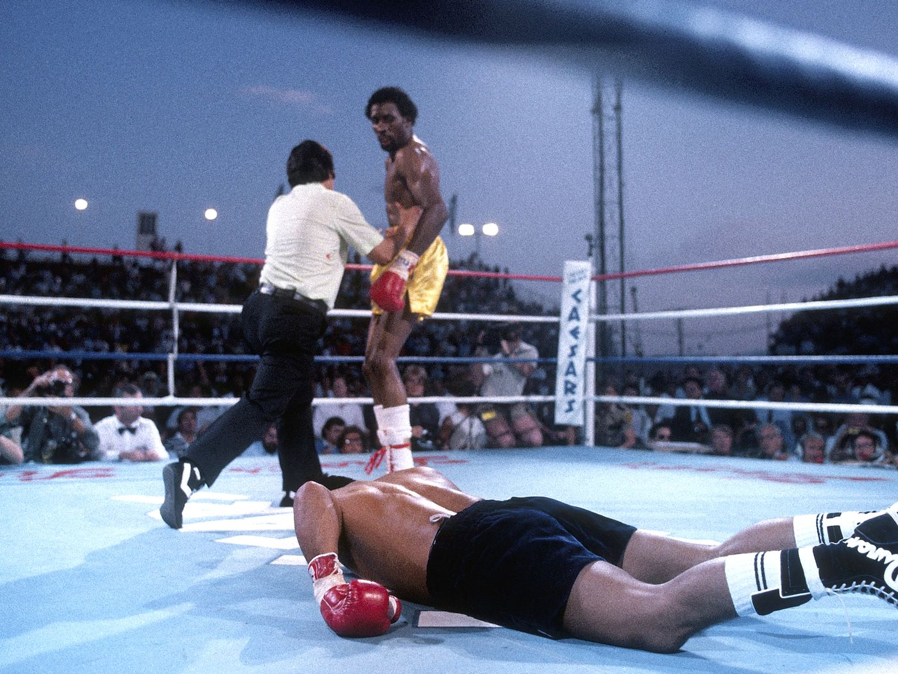

Thomas "The Hitman" Hearns, born in 1958 in Detroit, Michigan, made his professional boxing debut in 1977 at the age of 19. Known for his incredible knockout power and explosive punching ability, Hearns quickly established himself as a force to be reckoned with in the welterweight division. His debut marked the beginning of a legendary career that would include numerous championship titles and historic rivalries.
One of the most iconic fights in boxing history, Hearns faced Sugar Ray Leonard in 1981 for the undisputed Welterweight Championship. Their thrilling battle showcased Hearns' immense power and Leonard's resilience. Though Hearns dominated early on, Leonard staged a remarkable comeback, ultimately winning the fight by TKO in the 14th round. Despite the loss, this fight solidified Hearns as a legend of the sport.
Another of Hearns' greatest victories came in 1984 when he faced the legendary Roberto Durán for the WBC Welterweight title. Hearns used his superior height, reach, and power to outclass Durán, winning the fight by a dominant unanimous decision. This win cemented Hearns' place among the all-time greats in the welterweight division.
Thomas Hearns is widely regarded as one of the greatest boxers of his era. A multi-weight world champion, Hearns won titles in five different weight classes, making him one of the most versatile fighters of all time. His punching power, particularly his right hand, was legendary, earning him the nickname "The Hitman."
Hearns faced his share of struggles throughout his career. In addition to his loss to Sugar Ray Leonard in 1981, Hearns faced challenges with consistency and management of his weight across multiple divisions. Despite these setbacks, Hearns continued to compete at the highest level, always fighting against the best of his generation.